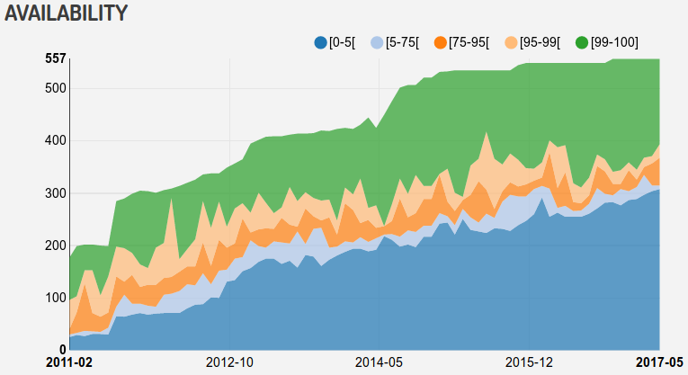

The ‘K’ in ‘Semantic Web’ Stands for ‘Knowledge’
Wouter Beek (w.g.j.beek@vu.nl)
19th June 2018
[1/6] Quantity Assumption: There is little data


LOD Laundromat Stack
[2/6] Quality Assumption: Statements are well-defined and interpretable

Most data cannot be read (e.g. Freebase 14%).
Chapter 4: Scaling Data Quality to the Web
[3/6] Accessibility Assumption:
Data can be easily (re)used

Chapter 3&5: Scaling Querying/Metadata to the Web
{kind=link}
[4/6] Homogeneity Assumption: Results obtained over 1 or 2 datasets can be generalized to all datasets
 Chapter 6: Scaling Evaluations to the Web
Chapter 6: Scaling Evaluations to the Web
[5/6] Context-independence Assumption: Meaning is independent of context
Things can be (considered) the same in some,
but not all contexts.
Chapter 7: Scaling identity to the Web
[6/6] Declarativeness Assumption: Meaning is captured by formal semantics over declarative statements
Graph A
abox:store tbox:sells abox:tent .
abox:tent tbox:costs "¥150,000" .
abox:tent rdf:type abox:Product .
Graph B
fy:aHup pe:ko9sap_ fy:jufn12 .
fy:jufn12 pe:oao9_ "Ufou" .
fy:jufn12 rdf:type fyufnt:tmffqt .
The ‘K’ in ‘Semantic Web’ Stands for ‘Knowledge’
Thanks for your attention!
And thanks to Frank & Stefan!